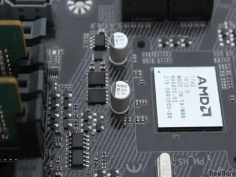

Chipset es el nombre que se le da al conjunto de chips (o circuitos integrados) utilizado en la placa madre y cuya
función es realizar diversas funciones de hardware, como control de los Bus (PCI, AGP y el antiguo ISA), control y
acceso a la memoria, control de la interfaz I/O y USB, Timer, control de las señales de interrupción IRQ y DMA, entre otras.

Función del chipset
Dicho de forma más técnica, el Chipset se encarga de entablar la conexión correcta entre la placa madre y diversos
componentes esenciales de la PC, como lo son el procesador, las placas de video, las memorias RAM y ROM, entre otros.
Por este motivo, la existencia del chipset es fundamental para que nuestra computadora funcione, ya que es el encargado
de enviar las órdenes entre la motherboard y el procesador, para que ambos componentes puedan lograr trabajar con armonía.
En otras palabras, es este pequeño elemento el que permite que la motherboard sea el eje principal de todo el sistema de
hardware de nuestra PC, y permite la comunicación constante entre diversos componentes, a través del uso de los buses.
Por otra parte, el chipset mantiene una comunicación directa y permanente con el procesador, y se encarga de administrar
la información que ingresa y egresa a través del bus principal del procesador. Incluso su función se extiende a las memorias
RAM y ROM y a las placas de video.